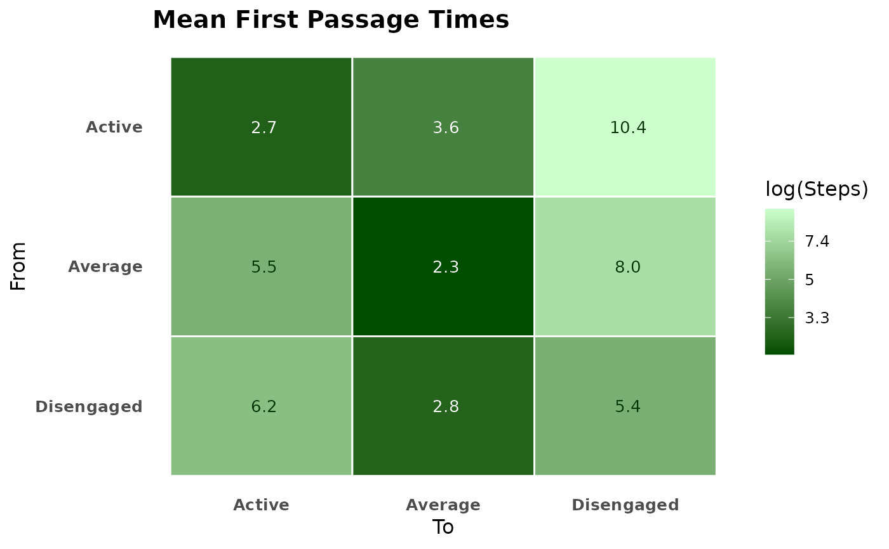

passage_time() computes the mean first passage times of a Markov chain:
the entry in row \(i\) and column \(j\) is the expected number of
steps a chain started in state \(i\) takes to reach state \(j\) for
the first time, and the diagonal entry is the mean recurrence time,
the expected number of steps to return to state \(i\). On an
irreducible chain it equals \(1/\pi_i\).
The stationary distribution \(\pi\) is returned with them. It reads a
transition network, a tna model, a transition matrix or wide sequences,
and analyses a grouped network one network at a time.
The times describe the estimated chain, in which a transition never seen
in the data counts as impossible. In an irreducible chain every state can
be reached from every other and every time is finite; in any other chain
a time into a state that is not reached with certainty is Inf (see
Details), so check the structure with chain_structure() first. markov_stability() condenses the matrix into
per-state summaries beside each state's persistence and sojourn time.
Usage
passage_time(x, states = NULL, normalize = TRUE)
# S3 method for class 'net_mpt'
print(x, digits = 1, ...)
# S3 method for class 'net_mpt_group'
print(x, ...)
# S3 method for class 'net_mpt'
summary(object, ...)
# S3 method for class 'summary.net_mpt'
print(x, ...)
# S3 method for class 'net_mpt'
plot(
x,
log_scale = TRUE,
digits = 1,
title = "Mean First Passage Times",
low = "#004d00",
high = "#ccffcc",
...
)
# S3 method for class 'net_mpt_group'
plot(
x,
log_scale = TRUE,
digits = 1,
title = "Mean First Passage Times",
low = "#004d00",
high = "#ccffcc",
...
)Arguments
- x
The chain: a
netobject, barecograph_networkortnamodel with non-negative transition weights, typically method"relative"or"frequency"(a co-occurrence network is read as its random walk), a non-negative numeric transition matrix (states are namedS1,S2, ... when it has no names), or a wide sequence data frame or character matrix, from which a"relative"network is estimated. A data frame needs its position columns named as a numbered run, as inbuild_network(); build the network first for any other layout. Anetobject_groupgives one result per group. An association network (cor,pcor,glasso,ising,mgm) or negative weights raise an error of classnestimate_not_markov. For theprint()methods: anet_mpt, anet_mpt_group, or the result ofsummary(); for theplot()methods: anet_mptornet_mpt_group.- states
The states to keep in the result. The times are computed on the whole chain and then subset, so they still count paths through the states left out. A name that is not a state raises an error. Default
NULL(all states).- normalize
Whether to rescale rows that do not sum to 1 so that they do, with a warning, as for a
"frequency"network. WithFALSE, such rows raise an error. A state with no outgoing transitions (a zero row) raises an error either way. DefaultTRUE.- digits
Decimal places of the printed matrix (
print()) and of the tile labels (plot()). The stationary distribution is always printed with 4. Default1.- ...
For
print()of anet_mpt_group: passed toprint()of each group's result (for exampledigits). Otherwise not used.- object
For the
summary()method: anet_mpt.- log_scale
For the
plot()methods: whether to colour the tiles by the logarithm of the passage time, so that short and long times can both be told apart; the legend and the tile labels still show steps. DefaultTRUE.- title
For the
plot()methods: the plot title. Default"Mean First Passage Times".- low, high
For the
plot()methods: the fill colours for the shortest and the longest passage times. Default"#004d00"(dark green) and"#ccffcc"(pale green).
Value
A net_mpt object; for a netobject_group, a net_mpt_group,
a named list holding one net_mpt per group. print() shows the
passage-time matrix and the stationary distribution. summary()
returns a summary.net_mpt object, a list holding the per-state table
(table) and the summarised net_mpt (object); its print() shows
the table, one row per state: state, return_time (mean recurrence time),
stationary (\(\pi_i\)), mean_out (the mean number of steps from
the state to the others) and
mean_in (the mean number of steps from the others to the state),
rounded to 2 decimals (stationary to 4). plot() returns a ggplot
heatmap of the matrix, rows the starting state and columns the target;
for a net_mpt_group, one panel per group on a shared colour scale.
The print() methods return their input invisibly. A net_mpt holds:
- matrix
The \(n \times n\) matrix of mean first passage times: row \(i\), column \(j\) is the expected number of steps from state \(i\) to state \(j\); the diagonal is the mean recurrence time, equal to \(1/\pi_i\) on an irreducible chain.
- stationary
The stationary distribution \(\pi\), a named numeric vector; zero outside the closed class of a chain with one closed class, and
NAfor a chain with several, whose stationary distribution is not unique.- return_times
The mean recurrence time of each state (the diagonal of
matrix), a named numeric vector: \(1/\pi_i\) in an irreducible chain,Inffor a transient state.- states
The state names.
Details
The times follow the Kemeny-Snell fundamental matrix formula: $$M_{ij} = \frac{Z_{jj} - Z_{ij}}{\pi_j}, \quad Z = (I - P + \Pi)^{-1}$$ where \(\Pi_{ij} = \pi_j\), and \(\pi\) is the left eigenvector of \(P\) for eigenvalue 1, scaled to sum to 1. The fundamental matrix exists for every irreducible chain (an ergodic chain in Kemeny and Snell's terms), periodic ones included.
A chain that is not irreducible (for example one with an absorbing state,
or with several closed classes) has no fundamental matrix. Its times are
the expected hitting times: the time from \(i\) to \(j\) is Inf
when the chain started in \(i\) may never reach \(j\), and
otherwise the minimal non-negative solution of
\(m_i = 1 + \sum_{k \ne j} P_{ik} m_k\) (Norris, 1997). Times into
the states outside a closed class are therefore Inf from inside it, and
times into the closed class are finite from every state that cannot
avoid it. The diagonal is the mean return time, Inf for a transient
state. On an irreducible chain both routes give the same matrix.
Nestimate 1.0.9 and earlier raised the zero stationary probabilities to
machine precision instead, giving times near \(10^{15}\) with a
warning, and stopped with an error for a chain with several closed
classes.
References
Kemeny, J.G. and Snell, J.L. (1976). Finite Markov Chains. Springer-Verlag.
Norris, J. R. (1997). Markov Chains. Cambridge University Press.
Examples
net <- build_network(as.data.frame(trajectories), method = "relative")
pt <- passage_time(net)
print(pt)
#> Mean First Passage Times (3 states)
#>
#> Active Average Disengaged
#> Active 2.7 3.6 10.4
#> Average 5.5 2.3 8.0
#> Disengaged 6.2 2.8 5.4
#>
#> Stationary distribution:
#> Active Average Disengaged
#> 0.3719 0.4431 0.1850
# \donttest{
plot(pt)

# }